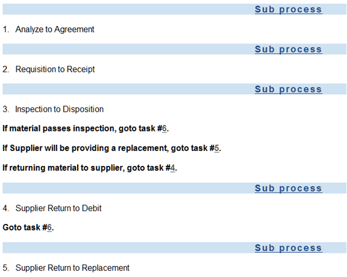
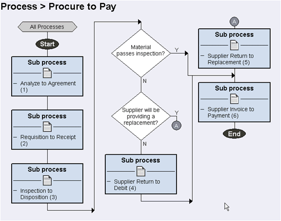
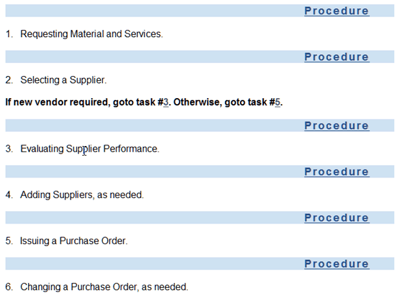
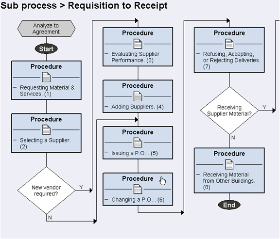
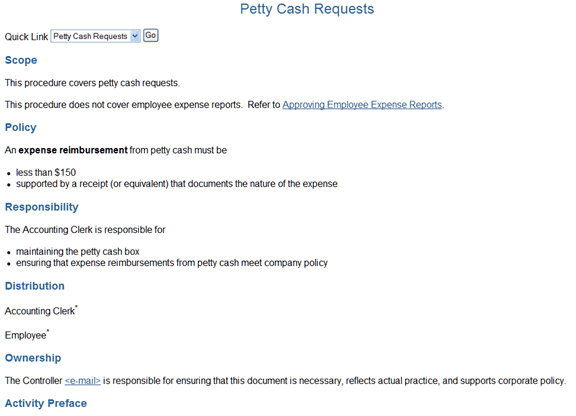
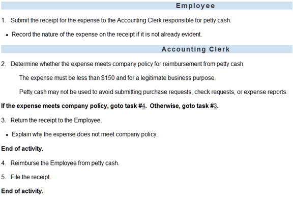
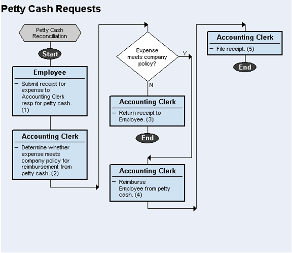
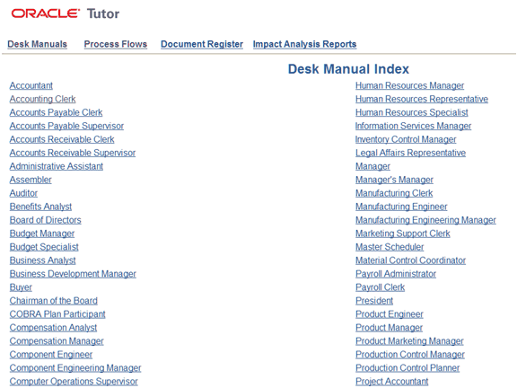
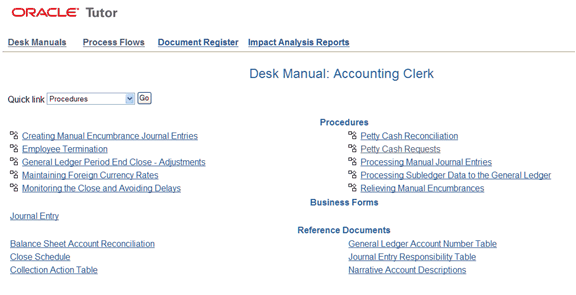

OUM |
Oracle User Productivity Kit Professional (UPK Pro) and Oracle Tutor Supplemental Guide |
||
Method Navigation |
Current Page Navigation |
||
|
|
||||||||
This document contains OUM supplemental task guidance for UPK Pro and Tutor.
The task guidelines in this document should be used to supplement the guidelines that appear in the OUM Task Overview.
Developing an accurate future state model is a critical activity in an applications implementation. Although the future state model may meet the organizations needs precisely, the only way the end user community can be immediately productive and meet the overall business objectives is through accurate user documentation and effective training. The to-be model must be effectively communicated to the end user community.
In order to achieve project objectives and value realization associated with an implementation, it is critical for key executives to understand, support, and communicate the importance of documentation and training. Change management strategy should be defined at the executive level, including vision, risk mitigation, approach, resource utilization, and process management:
Oracle Tutor has the capability to create multi-level business flow diagrams, which map to OUM Process Model Documents. The benefit of using Tutor Author to create these documents is Tutor's capability to automatically generate a flowchart from a task-based list of processes. While the process list can contain detailed information about the process in the form of notes, the flowchart is simply the process diagram.
The Tutor hierarchy starts with the process, then drills down to the sub process, then drills down to the procedure. The linking is defined during the document creation process, and once the html version of the content is generated from Tutor Author or Publisher, all the links become active.
Below is a representation of the work product - a process list in Tutor Author. Note the following:

Tutor Process in Text Format
Below is the flowchart of the above process list depicting the complete Procure to Pay process. The Tutor Author's one-click flowchart generation means revising the flowcharts becomes very easy.

Tutor Process in Diagram Format
The Tutor template for the process Model Document is the Process.doc, and is made available when Tutor Author is initiated from the desktop.
For detailed information about building a detailed process model with Tutor see the Tutor Instruction INS1076Y, Writing a Process or Sub Process Map. It is in the following directory when Tutor is installed on the desktop:
C:\Tutor\US\Orig\Ins
The process for creating current state and future state models is the same. See RD.011.1 above and RD.011.2 below for more information.
Implementing organizations need to communicate effectively to employees what is expected of them as they perform their jobs. Documented end-user procedures are the best way to communicate job performance expectations and are a significant part of a company's readiness to meet new standards for corporate governance. Integration of business procedures and how well they are supported by cohesive applications merits serious consideration. While documented procedures alone cannot enforce corporate governance, they are a necessary component of compliance. Increasing the visibility of, and improving the control of your business practices through documentation will better prepare your organization for the remainder of the Sarbanes-Oxley attestation audit process. Documented business procedures are the first step in corporate governance.
Oracle Tutor's integrated set of procedures and software tools offer companies a solution to quickly document, deploy, and maintain critical business procedures and training materials to help employees achieve compliance. The primary challenge for companies faced with documenting procedures is to realize that they can do their corporate governance documentation in-house, with existing resources, using Oracle Tutor.
Oracle Tutor has the capability to create multi-level business flow diagrams, which map to OUM Process Model Documents. The benefit of using Tutor Author to create these documents is Tutor's capability to automatically generate a flowchart from a task-based list of processes. While the process list can contain detailed information about the process in the form of notes, the flowchart is simply the process diagram.
The Tutor hierarchy starts with the process, then drills down to the sub process, then drills down to the procedure. The linking is defined during the document creation process, and once the html version of the content is generated from Tutor Author or Publisher, all the links become active.
Below is a representation of the work product - a detailed sub process model in list form in Tutor Author. Note the following:

Tutor Sub Process in Text Format
Below is the flowchart of the above sub process list. Tutor Author's one-click flowchart generation means revising the flowcharts becomes very easy. When this flowchart is presented in its html format, all hexagonal and rectangular objects contain links created automatically by Tutor.

Tutor Sub Process in Diagram Format
The Tutor template for the process Model Document is the Sub Process.doc, and is made available when Tutor Author is initiated from the desktop.
For detailed information about building a detailed process model with Tutor, see the Tutor Instruction INS1076Y, Writing a Process and Sub Process Map. It is in the following directory when Tutor is installed on the desktop:
C:\Tutor\US\Orig\Ins
Oracle Tutor's integrated set of procedures and software tools offer implementing organizations a solution to quickly document, deploy, and maintain critical business procedures and reference materials to help employees achieve compliance. Oracle Tutor is comprised of the following components:
| No. | Task Step | Description |
|---|---|---|
| 1 | Conduct Procedure Editing Workshop. | This workshop may be an extension of a previous team Learning Event, but It is very useful to develop the first set of procedures in a group environment with an instructor who can provide answers to frequently asked questions, and critique the initial set of revised procedures. This leads to more uniform content produced by the entire team. This workshop can last from 1-2 days up to 2-4 weeks, depending on the project environment. In some cases, the procedure editing may also be a component of one of the functional prototyping activities or workshops. The document owner works with the applications specialist to develop the proper combination of policy, business, and application content. If Model Documents are being used, it may be appropriate to initiate editing by conducting a redline editing session. In this case, paper copies of the procedures are distributed and team members modify them with a red pen. Documentation specialists then make the changes in the softcopy documents and redistribute. As part of this process, the group may want to create a list of valid job titles in the organization. Refer to Job Titles by Department [REF0009Y]. |
| 2 | Edit Procedures. | Once the workshop has run its course, the documentation team develops the remaining procedures. Best practice is to conduct this editing during the functional prototyping activities or workshops. This makes capturing the future state model more effective. Other options are to use use cases or test scripts as a source of content, but this can lead to inaccurate procedures if there is no effective review loop with the project team. It is wise to have the team members post their content daily to Oracle Files, or another repository, for protection. See the following Tutor Documents for additional guidance:
|
| 3 | QA Procedures. | QA is managed in two ways:
|
A Tutor Procedure contains three sections.
Note in the complete example of a work product below there is no system reference:

Procedure Introduction Section

Procedure Task List Section

Procedure Flowchart Section
It is important to formally define the relationship of the documentation effort to the development of the future state model. During validation of the Functional Prototype (RA.085) in a project, the ‘official’ approach to using the Application in a specific environment is developed. This must be communicated effectively to the resources developing the procedures. The best approach is to have the documentation effort performed in concert with the validation of the Functional Prototype.
In a commercial off-the-shelf (COTS) application implementation, you could manage the documentation development after validation of the Functional Prototype. This is a less effective approach but in that case, it is crucial to identify in advance the means to communicate the future state model to the document developers, using detail system use cases, test scripts or an equivalent. Further, it is important to let the documentation team know in advance how this approach will be managed, to avoid attempts to execute a second Validate Functional Prototype activity.
Another key issue is whether the effort will include the Help Documents and Courseware as well as procedures and transaction recordings. The list of work products is:
Oracle Tutor maintains baseline procedures known as Tutor Model Documents that are available to use as a starting point for procedure editing. Other baseline content is available that maps to Oracle Accelerators, or which is produced by outside parties. It is advisable to communicate which set or combination of documents has been chosen to all involved in the documentation effort, so that all parties will understand in advance which content will be the baseline. UPK content is also available for sale to customers. The scope of content is expanding, and the project team should research what is available at the time of the project.
Note that the scope of business procedures to be documented will be greater than the scope of Tutor Model Documents. Not all business processes requiring documentation reside in the business flows. If using Tutor Model Documents, use the Tutor Document Register (docreg.xls) found in the Tutor folder as a baseline for this.
While the Tutor Model Documents define a standard which is used as-is by many organizations, the content can be modified to suit the implementing organization. This applies to the prebuilt UPK transaction recordings and courseware documentation formats as well. Various issues are to be considered: Management must define how policies will be documented in the procedures. Document owners must define the degree of detail required to appropriately inform users. Auditors guide how the documents must be composed to meet compliance requirements (to eliminate duplicate efforts on the part of an audit team). Instructors must define courseware requirements working with users. Requirements must be gathered, defined, and agreed upon, then formatted into the document types.
One component of content standards in procedures is company policies. It can be useful to contact the HR or Finance departments within the implementing organization to review existing policies, and map them to business processes. In this way, policies such as purchasing dollar limits can be identified and prepared for inclusion in the proper procedures. The Tutor Report ‘Policy to Procedure’ (POL2PRO) is a useful tool for this activity.
It is recommended that if transaction recordings are being developed, the UPK Course Development Standards Guide be studied to assist the implementing organization in defining their templates for transaction recordings in their organization. An approach to linking Tutor Procedures to UPK Topics should be defined.
Key standards items to address include:
Note that standards may be continued to be refined through the early development activity, but should be settled prior to significant documentation effort.
Install the Tutor software as appropriate on individual PCs and the development server. Author will be deployed on the PCs of the document developers. Publisher needs only to be loaded on a single environment. See the Tutor Implementation Guide found in the User Manuals directory of the Tutor Install.
Install the UPK Developer software as appropriate. Decisions made previously about central server or individual PC deployment will guide this activity. See the Installation and Administration Guide found in the UPK Developer 31/Documentation/EN/Reference directory.
Test document collection and backup mechanisms.
Note that formal document management is provided by such software made available by the implementing organization.
The Tutor output that corresponds to the User Guide is the Desk Manual. The desk manual is automatically created by Tutor Publisher, and is the collected set of procedures and other process documents created by Tutor: navigation instructions, instructions, form abstracts, coding conventions, and reference documents. Publisher determines which process documents to include in a desk manual by analyzing each document’s distribution list. The Stockroom Clerk’s desk manual, for example, includes only those process documents that list Stockroom Clerk under Distribution. Creating desk manuals requires that all procedures be collected in a central working folder structure for access by Publisher.
There is also the option of creating a desk manual index. This document lists all of the job roles. A user can click on a specific job role to link directly to the desk manual for that role. A user who opens the online desk manual may jump from the table of contents to any of the documents that it references.
Desk manuals are created in a two step process - first an index of roles to documents is created by Publisher, then the desk manuals themselves are created. They are html documents that can be deployed on a web server for access by the document owners, the project team, and ultimately, the end users. Since creating the desk manuals takes little time, this can be done on a regular basis to monitor the progress of procedure development.
Examples of the User Guide work product are below. The first is the Desk Manual Index which contains all roles. By selecting a role, the user can navigate to an individual Desk Manual, which is the second example. From the Desk Manual, the user can access the individual procedures that apply to that role.

Tutor Desk Manual Index

Tutor Desk Manual
The following steps guide the assembly and publication of the Desk Manuals.
| No. | Task Step | Description |
|---|---|---|
| 1 | Publish Procedures. | See the following Tutor Documents for additional guidance:
See also the Tutor Publisher User Manual for specific How-To instructions. |
| 2 | Publish Desk Manuals. | See the Tutor Publisher User Manual for complete Instructions. |
| 3 | Publish UPK Transaction Recordings. | See the Tutor Publisher User Manual for complete Instructions. |
Oracle Applications contain Help documentation deployed as context sensitive html. When an end user is in a specific transaction and presses the help button, a help document opens which applies to that transaction. Oracle UPK can be used to create custom help that is also context sensitive for most web applications. In the UPK content, links can be added to procedures, making the business process documentation available to end users on a context sensitive basis as well. If the project includes the customization of Online Help as a work product, using UPK can be very useful. The custom created quickly from a single UPK authoring session can be used to generate multiple outputs that can be used for end-user training and testing, just to name a few.
| No. | Task Step | Description |
|---|---|---|
| 1 | Conduct Applications Help Editing Workshop. | This workshop may be an extension of the procedure editing workshop. |
| 2 | Conduct UPK Developer Workshop. | During scope definition, an initial list of the transaction recording topics should have been developed and owners assigned. The list of topics may have been further refined during the procedure editing process, with priority going to the complex or critical transactions that support key procedures. In this workshop, additional review of topics and owners should be done with the UPK developer team. It may be appropriate to use the Document Register as a procedure/topic cross reference and tracking mechanism. |
| 3 | Develop UPK transaction recordings. | Transaction recordings are best developed once the functional prototype environment contains organization data, and the organization business processes have been defined to the point where the transaction recordings are depicting the valid future state model. This is typically the second iteration of functional prototyping or later. End users in training will more easily understand transaction recordings that contain data with which they are familiar. |
4 |
Map transaction recordings to procedures. |
During standards definition, the linking approach will have been defined. Typically a procedure will have a transaction contained in a task, and there will be a link to the appropriate transaction recording. Adding links to procedures and transaction recordings should occur after the deployment environments have been defined for both training and the Applications instance, so that the links are accurate. Review the Instruction INS1080Y, Linking a Procedure to a Transaction Recording, for information on appropriate setup of production environments to ensure accurate linking. Best practice is to deploy the transaction recordings into the production environment and use absolute links between from the procedures to the transaction recordings. In this way, procedures can be deployed into both a training environment and into the Applications instance without breaking the links. If links are required from transaction recordings to procedures, a similar scenario must be developed. For additional guidance, see the Tutor document, Link a Procedure to a UPK Help Topic [INS1080Y]. |
5 |
QA transaction recordings. |
|
6 |
QA Help Edits. |
The QA cycle is performed until the content meets standards. For the verification of complete two-way referencing of procedures to Help documents, the QA must be coordinated with the Help Document QA process. |
7 |
Publish transaction recordings and Word documents. |
Transaction recordings are published as html-enabled recordings and deployed as html. The Word versions can be published simultaneously and used for a variety of purposes, including packaged in with the courseware. See the UPK document, Content Deployment. |
8 |
Upload UPK Help to Applications Environment. |
The documentation project may take additional resources from the implementing organization user community. In addition, the training of end users needs to be communicated and scheduled. The Change Management Roadmap/Communication Campaign manages the communication of the organizational change management approach, requirements, and schedule to the manager and user communities.
The work product for this task is the Job Impact Diagnosis. Tutor and UPK deliverables should be used to help define, by role within the organization, what is changing in terms of day-to-day work activity. Tutor procedures describe both the manual and systems supported tasks of the future state model. UPK transaction recordings identify the exact approach to processing transactions. Together with an assessment of what work activities will no longer be performed, a detailed guide to the impact of an implementation or a process improvement exercise can be communicated to managers.
The documentation project may take additional resources from the implementing organization user community. In addition, the training of end users needs to be communicated and scheduled. Present the documentation project strategy, resource requirements, schedule, and change management approach to business managers so they may prepare their organizations.
Point out that the most effective approach is to have the document owners come from within their organizations, in order to improve accuracy and uptake.
The documentation project team needs to be trained in using Tutor and UPK. Schedule Tutor and UPK Classes and Workshops. Confirm delivery of event kits.
Project teams, consisting of both internal and external resources, need to learn key sets of knowledge: Oracle Applications (when appropriate), Oracle UPK Pro and Oracle Tutor. If there is Applications education scheduled for the project team, it should be scheduled before functional prototyping activities begin, so that the internal team is familiar with the software as the future state model is developed. If UPK pre built content is available to the project, this content is an excellent source for applications training, especially as it does not require an instance be set up yet simulates the application environment.
Project teams need to be educated with Tutor software as well. Project team members can conduct self-guided learning by reading the Tutor Implementation Guide, and familiarizing themselves with additional Tutor supplied reference material.
Based on the project team learning plan, Tutor classes or workshops from Oracle University or Oracle Consulting are presented to the project team to ensure that all team members have the Tutor skills necessary to develop content in the Construction phase.
This activity may segue directly into the Procedure Editing Workshop described in the Construction phase. In fact, it is preferable to conduct a joint class and procedure editing workshop where the documentation project team learns to use the software and initial edits or revisions are conducted under the eye of the instructor. In this fashion, everyone learns the correct approach together, and a more homogeneous set of procedures is developed. In this case, the Procedure Editing Workshop task in the Construction phase would be combined with this task.
UPK transaction recording development typically occurs during or after functional prototyping activities, once the training Applications instance contains test data of the implementing organization. Training for UPK can take place at any time after simulation standards are set and before functional prototyping activities.
If Knowledge Center is being used, the development of the guided learning portals can only occur once other content such as procedures and transaction recordings have been developed. Training for Knowledge Center can occur late in the project.
The work product, User Learningware corresponds to UPK assembled Courseware documents and UPK transaction recordings. There can be many components to user learningware:
| No. | Task Step | Description |
|---|---|---|
| 1 | Conduct Courseware Workshop. | Steps 2 - 6 may have been completed in the Help Documentation Workshop if UPK was used. If UPK was used for Help Documentation, the time and effort to develop learningware will be greatly reduced. |
| 2 | Conduct UPK Developer Workshop to develop courseware. | During scope definition, an initial list of the transaction recording topics should have been developed and owners assigned. The list of topics may have been further refined during the procedure editing process, with priority going to the complex or critical transactions that support key procedures. In this workshop, additional review of topics and owners should be done with the UPK developer team. It may be appropriate to use the Document Register as a procedure/topic cross reference and tracking mechanism. |
| 3 | Develop UPK transaction recordings. | Transaction recordings are best developed once the functional prototype environment contains organization data, and the organization business processes have been defined to the point where the transaction recordings are depicting the valid future state model. This is typically the second iteration of functional prototyping or later. End users in training will more easily understand transaction recordings that contain data with which they are familiar. |
4 |
Map transaction recordings to procedures. |
During standards definition, the linking approach will have been defined. Typically a procedure will have a transaction contained in a task, and there will be a link to the appropriate transaction recording. Adding links to procedures and transaction recordings should occur after the deployment environments have been defined for both training and the Applications instance, so that the links are accurate. Review the Instruction INS1080Y, Linking a Procedure to a Transaction Recording, for information on appropriate setup of production environments to ensure accurate linking. Best practice is to deploy the transaction recordings into the production environment and use absolute links between from the procedures to the transaction recordings. In this way, procedures can be deployed into both a training environment and into the Applications instance without breaking the links. If links are required from transaction recordings to procedures, a similar scenario must be developed. For additional guidance, see the Tutor document, Link a Procedure to a UPK Help Topic [INS1080Y]. |
5 |
QA transaction recordings. |
|
6 |
Publish Transaction Recordings and Word Documents. |
Transaction Recordings are published as html-enabled recordings and deployed as html. The Word versions can be published simultaneously and used for a variety of purposes, including packaged in with the courseware. See the UPK document, Content Deployment. |
7 |
Publish Courseware. |
See the UPK Content Development:
|
It may be appropriate to prepare different environments for the user community as people learn in different modes:
If Knowledge Center is used as a content deployment tool, the following steps must be taken to roll out the content:
| No. | Task Step | Description |
|---|---|---|
| 1 | Conduct Knowledge Center Workshop. | Limit this to the In-House Knowledge Center course designer(s). |
| 2 | Develop Workgroups. | Typically, only the master workgroup is required, others may be useful if there is a completely independent business unit within an organization. |
| 3 | Load content. | |
4 |
Define knowledge paths. |
|
5 |
Define Usergroups. |
Group users by role or track. |
6 |
Assign and create assessments. |
Define success criteria with project team and organizational management. |
7 |
QA Transaction Recordings. |
|
| 8 | Create custom reports. | |
| 9 | Finalize content deployment environment. |
Content developed with Oracle Tutor and UPK, and deployed via UPK Pro Knowledge Center, is suited for both self service, on demand learning, and instructor led learning, Further, the ability to link Tutor Process Models and Procedures, and UPK transaction recordings into the Oracle Applications, make these work products available for production support after go-live.
Post Go-Live system auditing is not a one time event. The implementing organization should be instructed to audit the system, procedures, and training material to ensure accurate reflection of changing business conditions. Proactive auditing helps make certain that the Applications are being used correctly and efficiently and supports productivity.

Copyright © 2006, 2016, Oracle and/or its affiliates. All rights reserved.